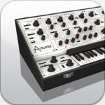
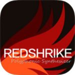

I posted a bit of a discussion piece this week looking at the status of between-app connectivity for iOS music makers. My broad conclusion (hope?), while I’m sure not original in any form, is that I think the Audio Units plugin format under iOS has the potential to do what a combination of VST, AU and a couple of other formats, have done of the desktop. Workflows will, therefore, become based around a suitable AU host (a DAW/sequencer or a software-based audio mixer) and a collection of AU virtual instruments and effects.
I posted a bit of a discussion piece this week looking at the status of between-app connectivity for iOS music makers. My broad conclusion (hope?), while I’m sure not original in any form, is that I think the Audio Units plugin format under iOS has the potential to do what a combination of VST, AU and a couple of other formats, have done of the desktop. Workflows will, therefore, become based around a suitable AU host (a DAW/sequencer or a software-based audio mixer) and a collection of AU virtual instruments and effects.
As I described a few months ago as part of the ‘less is more’ series, I’m not sure we are quite there yet. One of the obvious consequences of the ‘AU host + AU plugins’ model is that app developers will really only need to supply their apps in two formats; standalone and AU. However, right now, we are also still dealing with Audiobus and IAA ‘plugin’ formats. And while I’m sure Audiobus itself will continue to have a role as a host for other apps, I’d be surprised if that isn’t predominately as AU plugins; the IAA and Audiobus plugin protocols could soon (12 months or so?) become ‘legacy’ formats. In addition, right now, we also have the situation that not all our favourite apps offer AU support…. and even some brand new, high-profile, releases are still arriving without AU on the spec sheet.
At present, AU coverage is a bit sketchy. There are some app categories with plenty of AU options…. and others with almost none. So, if you are relatively new to the wonderful world of iOS music technology, and want to build your app collection using what is undoubtedly the format of the immediate future, where do you start?
Can you just do AU? When it comes to synths, then the answer is probably yes as there are now some brilliant options….
That’s where this short series of posts will (I hope) come in. As time allows over the next few weeks, I’ll take a look at all the various categories of iOS music apps and try and provide some AU-based suggestions…. and also point out the current AU holes. As well as allowing potential users to ‘mind the gap’, perhaps the discussion might also encourage a few developers – new and old – to consider filling those gaps with some AU-friendly updates or new AU-based apps.
So what’s up first? Well, I thought I’d start with a relatively easy – but also very popular – category; the iOS synth.
How many synths do I need?
This is, of course, a question without a single answer because it depends entirely upon the type(s) of music you like to create, how you like to create it, and what sorts of instruments you like to use. An EDM or ambient soundscape producer might have a different response to this question that an piano/guitar playing singer/songwriter.
So, while acknowledging that it is a somewhat pointless question (!) with a somewhat arbitrary answer, let’s just pluck the number 10 out of the ether and see if we can identify a working selection of 10 iOS synth apps that offer both standalone and AU support. And, amongst that selection, let’s try and cover a reasonably broad palette of synth types and/or approaches…..
A (synth) starter selection for 10
iSEM
Arturia’s iSEM is a virtual recreation of the classic Oberheim SEM and has been around on the App Store for some considerable time. However, Arturia delivered quite a coup when they updated iSEM soon after Apple launched the iOS version of AU; iSEM claimed the ‘first off the blocks’ award in the AU virtual instrument category.
iSEM is a seriously good synth app and sounds absolutely fabulous. Does it capture the exact sonic character of the original hardware? Well, I’ll leave you to carry out your own scientific tests…. but I’m more than happy just to listen and enjoy how the app sounds in tis own right. In standalone more it makes for a great performance synth, while the AU support allows you to use it as a plugin – including multiple instances – in any of the popular iOS AU hosts.
iSEM was one of the very early adopters of the AU format.
You can read the full review of the app if you want to find out more but, with AU now added, if you are an iOS synth collector then this is definitely one to add. and, if you are a newbie iOS musician building your synth app collection, this is an obvious contender to add.
iSEM – review – UK£9.99/US$9.99
Poison-202
I reviewed Poison-202 from JimAudio soon after it was released. Poison-202 is a vintage-style iOS synth, inspired by some of the classic synths from the 80s and 90s, paying homage to the synth sounds found on tracks from The Prodigy, Chemical Brothers, Kraftwerk and Daft Punk amongst others.
The app had AU added not that long after release and the implementation worked a treat. You can access the full feature set of the synth engine within the AU window in an almost identical fashion to when running the app standalone. What’s more, there is now also a desktop version and, for those that like to move projects between the two platforms, this certainly is an advantage as you have the same sounds available on both.
Poison-202 in action via AU within Cubasis and with multiple instances running.
Poison-202 might not offer anything that is particularly out of the ordinary when it comes to sounds but it does sound great and, as a workhorse synth for a wide range of bass and lead sounds, it really does a great job. The neat, no-fuss, style and operation also make it very easy to use.
Poison-202 – review – UK£9.99/US$9.99
Redshrike
Developer iceGear/iceWorks are perhaps best known for their slightly left-of-centre synths with something of a distinctive sound. However, with Redshrike, which I reviewed when it was first released, they perhaps took a somewhat more conventional approach. The app started life with an iPhone-only specific design. However, it some became universal and that iPhone-based UI made it an obvious target for AU implementation.
Indeed, the AU UI is really rather good and features a scrolling panel (rather than multiple tabbed pages) to let you view the complete control set. And there is a pretty serious synth engine under the hood so, if you like to do a bit of DIY sound design (rather than just loading a preset or three and playing), then there is plenty to keep you occupied.
Redshrike working via AU within AUM.
In terms of sound, this is somewhat more conventional than other iceGear synths but it still has a dollop of that distinctive sonic character while also being a decent all-rounder for any electronic music producer.
Redshrike – review – UK£7.99/US$7.99
 Troublemaker
Troublemaker
As I mentioned back in January when doing a full review, Bram Bos’ Troublemaker, as the name suggests, is an app with a certain amount of attitude. This is a synth that attempts to capture the essence of Roland’s famous (infamous?) TB-303 hardware ‘bass’ synth, the synth that perhaps launched the whole ‘Acid’ music genre on its own. It doesn’t disappoint and it has already gained a very enthusiastic audience….
Troublemaker is an app that runs standalone but one that was also designed with AU support from the ground up. The standalone version features a hugely creative ‘phrase sequencer’ (it really is brilliant) and this isn’t part of the AU spec. You can, however, save phrases as MIDI files and load them into your host DAW/sequencer so it is easy to workaround.
When used via AU, you just get the synth controls panel without the step sequencer…. but it is still brilliant.
The interface brilliant and it really does sound great. You can capture the essence of the 303 vibe with easy…. but also cover a somewhat wider palette of sounds. While it isn’t a ‘do it all’ synth, the control set is compact, easy to use (perfect for the AU format under iOS) and the range of sounds is focused on basses and leads. Troublemaker is perhaps a somewhat more specialised tool that some of the other synths in this selection but it is undoubtedly one of my favourite iOS music app releases of 2017; top-notch stuff.
Troublemaker – review – UK£8.99/US$8.99
Ripplemaker
Ripplemaker is described as a ‘West Coast Flavoured Modular Synth’ and, if you are familiar with Troublemaker (described above), then there are plenty of elements in this app that will feel like home. In the stand-alone version of the app we get something very similar to the Troublemaker pattern sequencer for creating your monophonic parts with a few tweaks to suit something that’s not intended to be quite so 303-like. This includes all the brilliant randomize options where you can generate random sequences within a fixed key/scale combination until something wonderful appears. You can then ‘mutate’ those sequences (adding subtle or not so subtle variations each time the sequence cycles through playback).
However, the synth engine is also worth getting excited about. This is a ‘semi-modular’ design that provides perhaps the most accessible approach to DIY synth building that I’ve encountered on any platform. Yep, a modular approach to a synth that almost anyone can use and have fun with.
Whole projects just with Bram Bos’ AU apps. Ripplemaker gets in on the action….
And it sounds great…. and, of course, like Troublemaker, Bram Bos has designed it very much with AU in mind from the ground up. Just brilliant all around and another shoe-in for my ‘top-ten new music apps of 2017’ when the time rolls around.
Ripplemaker – review – UK£8.99/US$8.99
NS1
If some of the mega iOS synths leave you feeling a little intimidated – or maybe, once in a while, you just hanker after something a little more streamlined to coax a synth tone out of – then the design of Nikolozi Meladze’s NS1 might well appeal. All the controls are contained within two ‘pages’ of nicely laid out knobs, pop-up menus and XY pads and you can move between them using the left/right arrows located at the sides of the control set.
NS1 offers a very useable AU UI…. as shown here within Cubasis.
And, as the app was designed with AU in mind right from the start, it’s a UI that works really well under AU, although it also works well as a standalone app should you wish. As a pretty early entry into the iOS AU marketplace, NS1 gained quite a bit of attention. It is a solid, easy-to-use virtual analog synth. It perhaps won’t win any prizes for ‘most powerful synth engine’ anytime soon, but it is a capable instrument with a neat visual design and a control set that it easy to learn. Oh, and it is also very affordable.
NS1 – review – UK£9.99/US$9.99
NFM
If NS1 gives us ‘virtual analog’, Niko also offers ‘virtual FM’. His latest iOS synth is NFM and, while the synth engine is built around a six operator FM design, in overall concept, NFM slots in right beside NS1. It offers a compact, two screen, control set, it’s programmable (but not mind bending), there are some great sounds to be had and, yes, it is designed to be used as an AU plugin…. although a stand-alone version is also provided and that works just fine.
As the app attempts to emulate an FM style synthesizer there will be no prizes for guessing the sorts of sounds that you can create. Perhaps the hardware synth that best defined the whole FM thing was Yamaha’s DX series and NFM gets that sonic vibe. The engine is perhaps a little deeper than that provided by NS1 and, therefore, the DIY programmer has more tools at their disposal.
NFM is a very capable AU-based synth.
Indeed, I have to say that working through NFM preset collection left me with the impression that Niko has an engine design here that is capable of much (very much) more than 1980s FM; there is a very diverse sound set included here and it demonstrates how versatile NFM can be once you start to dig into the programming options. It’s a little more pricey than NS1 but also a step up in terms of features.
NFM – review – UK£14.99/US$14.99
 Phosphor 2
Phosphor 2
Audio Damage are a relatively new developer for iOS but, as their mission seems to be to port all their very good desktop music plugins over the mobile in double quick time, they have made a rapid start. Most of these apps are in the effects category but one exception is Phosphor 2, which I review on the blog recently. The synth is modelled upon aplhaSyntauri, which is a vintage (early 80s!) digital synth, but the UI design is super-modern and, with a single-screen standalone version, the AU UI holds the same controls spread across two pages.
The synth engine is built around a twin additive oscillator/envelope model. While the oscillators offer the (limited by modern standards) same options as the original hardware, there are a few places where Audio Damage have respectfully enhanced the specification and these give the user considerably more options in terms of the sonics.
Used via AU – as shown here within AUM – the control set is split across two pages.
If classic synth rock is your thing, then I think you will like Phosphor 2 a lot. If contemporary EDM is more your music of choice, then there are perhaps more obvious synth choices. That said, you can roll your own sounds with a more ‘modern’ feel once you have familiarised yourself with the synth engine and those cross modulation options also make it possible to get into almost sound design territory with ease.
I think the app hits a ‘sweet spot’ in a number of ways; sound, format (AU), ease of programming and price. What’s not to like?
Phosphor 2 – review – UK£5.99/US$5.99
 Zeeon
Zeeon
BeepStreet are perhaps best known for their Sunrizer synth app which has been around on the App Store for a long time. However, the have recently added Zeeon Synth to their catalogue and this is their first app to offer AU support.
In term of basic details, Zeeon Synth is a virtual analog synth and powered by what BeepSteet describe as ‘an advanced analog circuit modelling engine’. The documentation hints at some pretty detailed algorithms in order to capture the essence of that analog sound…. there is a bit of a CPU hit but also a considerable return in sound; Zeeon sounds absolutely fabulous. This is a synth that, in sonic terms at least, could easily be used for some serious live performance duties.
Multiple instances of Zeeon via AU are possible if your iPad hardware is up to the task :-)
Whatever the code, the front-end UI looks very modern and slick with the key controls spread across two main screens. The synth itself is a twin oscillator design with variable waveforms and, rather interestingly, the engine includes code to simulate analog drift and the influence of the power supply. There are also some great filter, envelope and modulation options. Zeeon is a classy design with a classy sound and a pocket money price.
Zeoon – review – UK£9.99/US$9.99
 Addictive Pro
Addictive Pro
VirSyn are one of the software developers that have fully embraced the iOS platform and they have an extensive collection of iOS music apps populated mostly by ports from their desktop software. I reviewed what is now perhaps their flagship iOS synth – Addictive Pro – just after it was released. It’s a bit of a beast with extensive programming options and an impressive array of sounds.
The app was given a further boost when VirSyn added AU support back in February. Given that the control set is quite deep – and the AU window doesn’t offer that much space – VirSyn have done a remarkable job of revamping the UI for AU. It is, however, a trick they have pulled off very well. This includes the impressive arpeggitaor that’s built into a number of their apps; all present and correct here under AU.
VirSyn have done a pretty good job of packing in the full control set of the synth under AU…. use the tab button located bottom-right to move between the main pages of controls.
Addictive Synth is one of the deeper iOS synths to get the AU treatment and, while we are still waiting to see whether some other top-end favourite synths will ever get the same treatment, VirSyn have demonstrated that it is possible to do and still retain a reasonable user experience. Impressive stuff.
Addictive Pro – review – UK£19.99/US$19.99
Honourable mentions
Ten of something is a nice easy number and, frankly, the ten synth apps mentioned above could probably cover 90% of the sonic ground that most iOS music makers would need (indeed, maybe less than ten as there is undoubtedly some sonic overlap between some of the apps listed above). However, the iOS synth category is one of the better served in terms of AU support so there are (inevitably) some very good candidates that I’ve no yet mentioned.
So let’s not worry about whether it’s cheating and list a few more ‘well worth a look’ options in passing for those with an insatiable appetite for all things iOS AU synth…. You might well be able to think of some others but, for me, there are perhaps four other options that particularly appeal.
I like the minimalist ‘alternative’ vibe that Klevgränd Produktion bring to their iOS apps. Their Enkl synth app is perhaps a bit of an exception (the control set has a little more to it than some of their apps) but this is a cute little synth, easy to use and, yes, works great either standalone or as an AU plugin.
Enkl mono-synth – now available as an AUi plugin and running smoothly within Cubasis.
Yonac are a well established iOS music app developer but their latest offering – Kaspar – is sort of ‘8 synths in one’ as it allows you to use what is a solid (if perhaps not cutting edge) synth engine up to eight times to build more complex sounds. It’s a combination that works pretty well as you get simple(ish) programming but sound blending for additional sonic diversity. The UI works pretty well under AU and Kaspar is a lot of synth for a decent price.
Yonac have managed to get the full Kaspar experience into the AU plugin.
I’ve tended to stay away from the ‘really deep’ synths in the main list above. This particle reflects my own limited synth programming abilities (I’m a guitar player after all) but also because I suspect this list will be of more interest to those new to iOS music making rather than the old hands.
The AU version provides access to the full control set…. as shown here within AUM.
However, if you crave something a little more brain-bending when it comes to programming – but want it in an AU-friendly package, then either (or both) of Mood (from apeSoft) or PPG Infinite (from Wolfgang Palm) will tick the appropriate boxes. Both are capable of creating some amazing sounds and this can be conventional or ‘sound design’; the choice is yours….. but just don’t say I didn’t warn you that deep’ really does mean ‘deep’ when it comes to the programming options..
If Infinite isn’t quite enough, how about Infinite x 2?
Something other than synths?
While some iOS music makers could get their thing done with just a suitable AU host and a selection of the AU-ready iOS synths listed above, most of use would also want some other tools. So what are the options when it comes to audio effects, or drum machines, or virtual instruments or guitar rig sims?
I thought you would ask…. so, as time permits, I’ll put together some further posts over the next few weeks and try to cover a bit more ground. Until then, feel free to pop a suggestion or three down below of a favourite iOS music app you would like to see with AU support…. Maybe we can then get a developer to two to drop by for some encouragement?


Related posts:
 Format Fitness – iOS music makers need a plugin standard to stick
Less is more; part 6 – a compact ‘AU-only’ iOS music app collection for music production
Less is more; part 3 – a minimalist iPad recording studio on a budget
The Playstation Paradox – Guest post from Bram Bos, developer of Ruismaker, Troublemaker and Ripplemaker
Format Fitness – iOS music makers need a plugin standard to stick
Less is more; part 6 – a compact ‘AU-only’ iOS music app collection for music production
Less is more; part 3 – a minimalist iPad recording studio on a budget
The Playstation Paradox – Guest post from Bram Bos, developer of Ruismaker, Troublemaker and Ripplemaker


{kind=link}
{kind=link}
{kind=link}
{kind=link}
{kind=link}
{kind=link}
{kind=link}
{kind=link}
{kind=link}
{kind=link}
{kind=link}
{kind=link}
{kind=link}
{kind=link}
{kind=link}
{kind=link}
{kind=link}
{kind=link}
{kind=link}
{kind=link}
{kind=link}
{kind=link}
{kind=link}
Great points made John. I’d like to add that the developer, Blamsoft, came on to the iOS scene with nothing but AU apps; so Viking Synth certainly could have been mentioned here. Along with iSem, Viking is one of the most used synths in my iOS tool chest.
Hi Toz…. thanks for that. Yes, there are a number of other, also good, options when it comes to AU-ready iOS synths…. The cupboard is not, however, quite so full in some other categories….. :-( Hopefully, that will change soon…. very best wishes, John
Interesting article John!
We are blessed with so many great synths on iOS. The combination of your detailed reviews and Doug Woods’ “thesoundtestroom” YouTube demo videos is essential to make good purchase decisions.
I think I’m synthed out – how many more do I need?
These days I’m looking to innovative apps like Replicant2 or IAPs with great content to spend my $$$s.
Awesome! Thank you so much mate!
Was really helpful!!! Can’t wait for another part!anything in the pipeline?
AU is the way to go. It’s just working and sooop good!